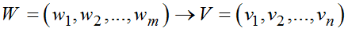
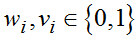
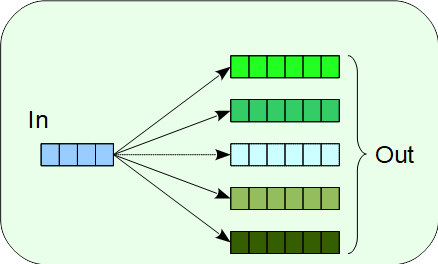
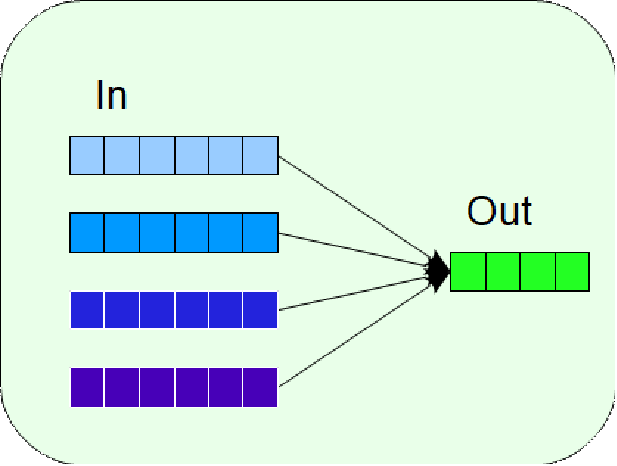
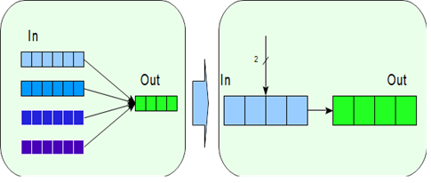

Примитивные операции, используемые при построении блочных шифров, можно рассматривать как отображения векторного пространства размерности m в векторное пространство размерности n:
,
где .
В случае m < n несколько выходных значений соответствует одному входному значению, что характерно для сюръективной функции. Функция называется сюръективной, если любым двум разным элементам X соответствуют разные элементы Y (рис. 4.7).
 |
Рис. 4.7. Сюръективное отображение |
В случае m < n одному выходному значению отображения соответствует несколько входных значений, это соответствует инъективной функции (рис. 4.8). Функция называется инъективной, если каждому элементу множества Y может быть сопоставлен хотя бы один элемент из множества X. Это может использоваться при построении вероятностных алгоритмов шифрования, в которых результат выполнения операции зависит от некоторых случайных данных.
 |
Рис. 4.8. Инъективное отображение |
В случае m = n операция задает взаимно-однозначное соответствие между входными и выходными данными, такая операция называется биективной (обратимой). Биективной называется функция, которая одновременно является инъективной и сюръективной.
Если отображение является инъективным, то некоторых случаях его удобно рассматривать как операцию размерности m = n с соответствующим дополнительным управляющим входом размерности k. Такие операции называются управляемыми (рис. 4.9).
 |
Рис. 4.9. Преобразование инъективного отображения в управляемую операцию |
Управляемой криптографической операцией является операция, результат которой зависит как от входного значения, так и значения поданного на управляющий вход.
В составе управляемых операций выделяют информационный вход и управляющий вход. Если для любого значения управляющего входа операция является биективной, то управляемая операция называется биективной. Управляемые операции характеризуются размерностью управляющего входа и в зависимости от ее размерности, бывают одноместными, двухместными и т.д. Данные для управляющего входа могут выбираться различными способами − использование подключа, использование подмножества преобразуемых данных, использование выходных данных генератора псевдослучайных чисел, комбинированный способ.
В современных управляемых блочных шифрах нашли применение управляемые операции с небольшим размером входа, объединенные в слои управляемых операций. При этом, как правило, в раундовой функции используется несколько слоев операций возрастающей размерности. Общая структура БШ при этом сохраняет итеративный характер и содержит в своем составе те же операции, что и обычные блочные шифры, т. е. линейное преобразование, нелинейное преобразование и добавление подключа, но при этом одна или несколько из этих операций относятся к классу управляемых операций.